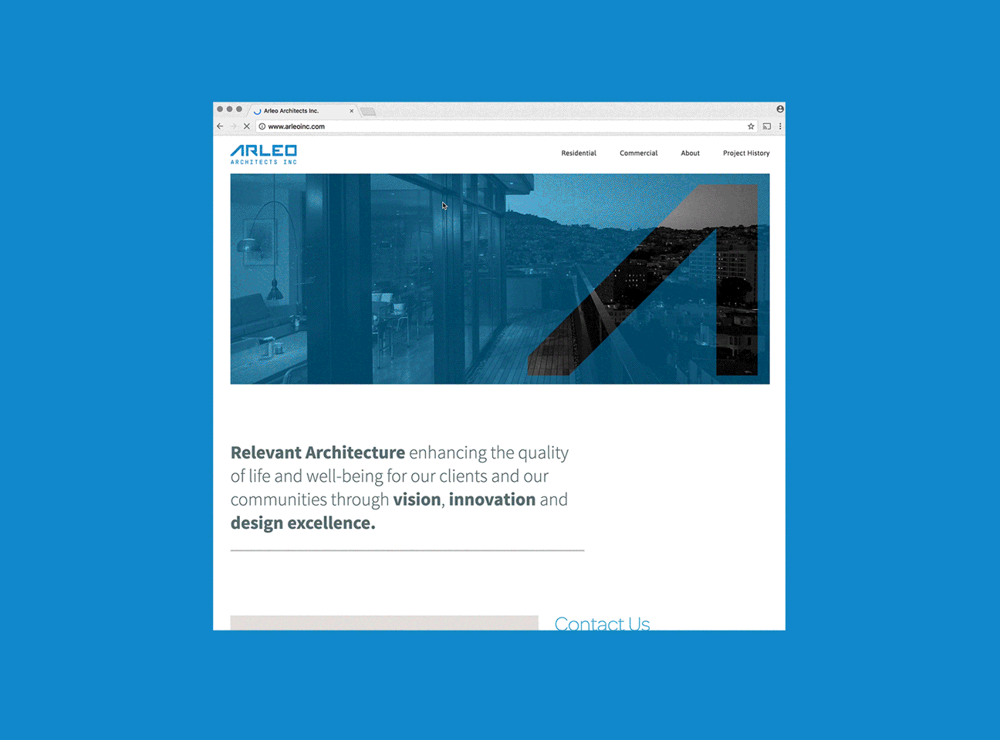
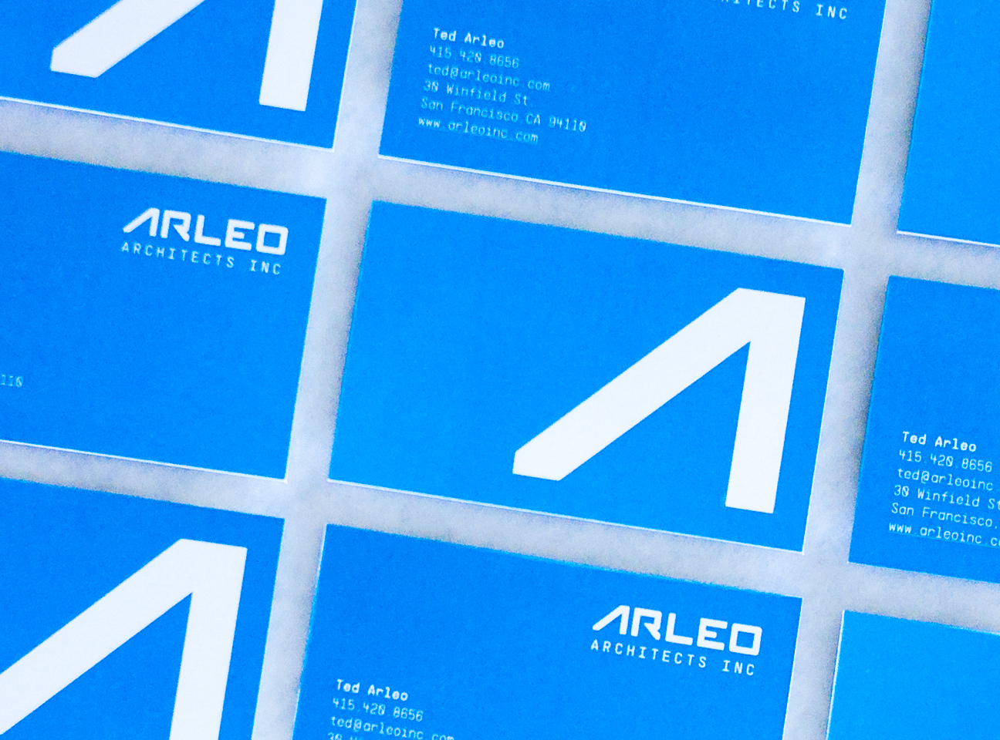

Arleo Architects Inc.
New identity and web design for local architecture practice Arleo Architects.
Arleo Architects celebrates relevant architecture, enhancing the quality of life and well-being for their clients and our communities through vision, innovation and design excellence. Ted Arleo collaborated with me in building Arleo Architect's new identity, website, and print collateral.
We created a bold and resilient word and abstract mark for Arleo Architects. These two marks were used interchangeably amongst business cards, mailers, letterheads, job signs, and title blocks.

Abstracted A mark.
A preview of the Arleo website.
The web portfolio is grouped into residential and commercial projects which showcase Arleo Architects' innovative and well-crafted work that has influenced a lot of the surrounding community here in San Francisco. 
It was great working with such a talented team of architects. Their vision for no fuss design helped steer the direction of this project.